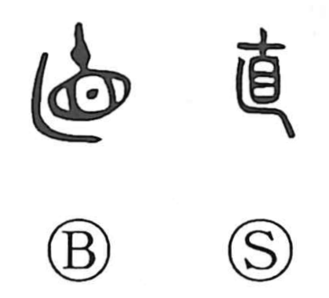

直

Kun: tadachini, naosu, naoru, tadashii, naoi, tada | On: choku, jiki
straight ・ direct ・ to correct ・ to fix ・ immediately ・ only
Explanation
直 combines the inspecting eye of 省 with 乚, a screening or concealing boundary. In 省, an ornament above the eye strengthens its spiritual power. The adorned gaze was used in inspecting a territory and bringing wrongdoing under control.
With the screen added, 直 probably means investigating secretly and correcting what is wrong. From setting things right come ‘correct,’ ‘upright,’ and ‘straight.’ Applied to a person, this becomes an honest, unbent disposition.
The old graph also shares uses with 値 for meeting, encountering, and value. Its familiar Japanese verbs naosu and naoru retain the active and resulting sides of correction: putting something right and returning to a proper condition.